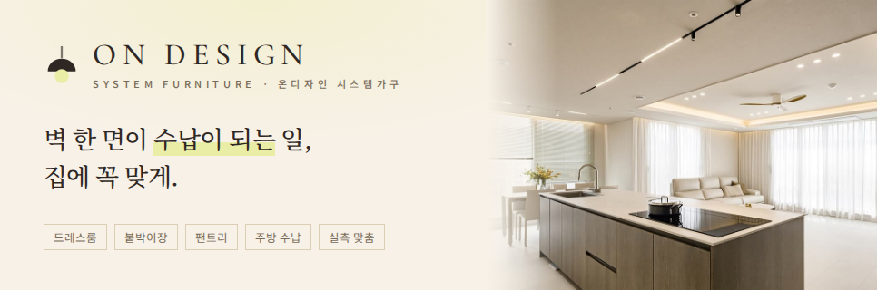
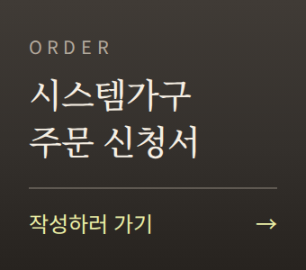
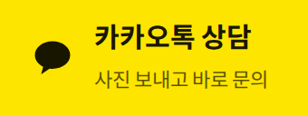
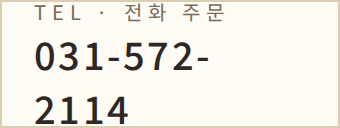
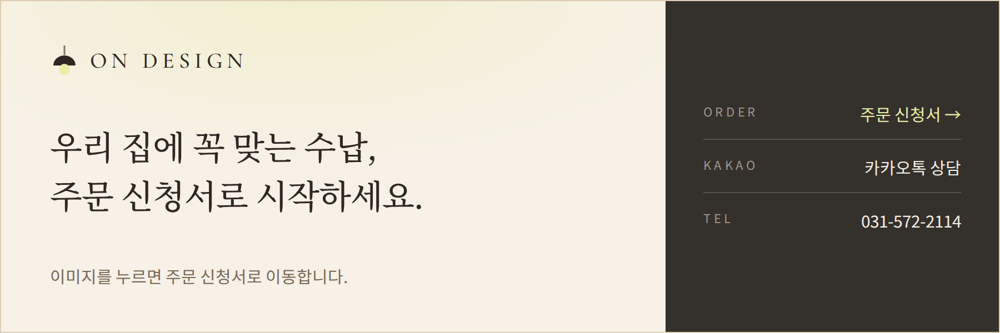

blog.naver.com/own_system에 홈페이지와 같은 스킨, 카톡 문의 창구, 주문 신청 버튼을 넣는 방법입니다. 네이버 블로그는 직접 만든 입력 폼을 넣을 수 없어서, 버튼을 누르면 주문 신청서 페이지로 이동하도록 연결합니다.

title.png 내려받기 · 966 × 320 px



<a href="https://link.myowndesign.co.kr/furniture/#order" target="_blank"><img src="https://link.myowndesign.co.kr/furniture/blog-kit/widget-order.png" width="170" height="150" alt="시스템가구 주문 신청서"></a>
<a href="https://pf.kakao.com/_JxiWGG" target="_blank"><img src="https://link.myowndesign.co.kr/furniture/blog-kit/widget-kakao.png" width="170" height="64" alt="카카오톡 상담"></a>
<a href="tel:031-572-2114"><img src="https://link.myowndesign.co.kr/furniture/blog-kit/widget-tel.png" width="170" height="64" alt="전화 031-572-2114"></a>
위젯은 PC 블로그에서만 보입니다. 모바일은 STEP 3의 배너와 STEP 4의 공지글로 안내합니다.

드레스룸·붙박이장·팬트리 실측 맞춤 시공 | 주문 신청 link.myowndesign.co.kr/furniture | 카톡 상담 pf.kakao.com/_JxiWGG | ☎ 031-572-2114